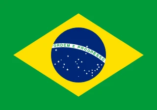

1. Germany’s 7-1 Massacre
July 8, 2014, Mineirão Belo Horizonte—58,141 fans pack Brazil’s cathedral for the semi-final, Brazil vs. Germany. Neymar’s out, Thiago Silva suspended—hosts limp. 11th minute—Thomas Müller taps in, 1-0. Then hell breaks loose—23rd, Miroslav Klose (record 16th World Cup goal), 2-0; 24th, Toni Kroos, 3-0; 26th, Kroos again, 4-0; 29th, Sami Khedira, 5-0. Second half—André Schürrle, 6-0, 7-0. Oscar’s 90th, 7-1—too late.
Silence falls—Brazil’s yellow sea weeps; Germany’s bench erupts. “Unreal,” Müller says; coach Joachim Löw shrugs, “It happened.” Clips flood X—five goals in 18 minutes, Julio César’s despair—worst Brazilian loss ever. “Humiliation,” Luiz Felipe Scolari sobs; Klose’s 16th tops Ronaldo—Germany march to the final, 1-0 over Argentina. “We collapsed,” David Luiz admits—58,141 witness history’s cruelest rout.
It’s not a game—it’s a slaughter. Germany’s fourth title looms—Brazil’s dream dies at home. “They were merciless,” Pelé tweets; Löw nods, “Perfect storm.” Fans rewatch—each goal a gut punch—2014’s defining nightmare. From 1-0 to 7-1, Mineirão’s silence screams louder than Maracanazo—Germany’s machine crushes samba.

2. Chile’s Triumph Over Spain
June 18, 2014, Maracanã Rio—74,101 fans for Chile vs. Spain, group stage. Spain, defending champs, reel from 5-1 Dutch loss. 20th minute—Eduardo Vargas pounces on Charles Aránguiz’s flick, slots past Iker Casillas—1-0. 43rd—Aránguiz smashes a loose ball after Xabi Alonso’s error—2-0. Chile press—Alexis Sánchez, Gary Medel relentless—Spain misfire, 68% possession, no goals. 2-0—champs out.
The stadium roars—Chile’s red tide surges; Spain’s bench slumps. “We shocked them,” Vargas grins; coach Jorge Sampaoli beams, “Fearless.” Clips flood screens—Vargas’s finish, Aránguiz’s rocket—Spain crash, third in Group B. “They outran us,” Xavi admits; Casillas sobs, “It’s over.” Chile advance—Netherlands next—FIFA’s 31st topples 2nd, ending Spain’s dynasty.
It’s not flair—it’s grit. Chile’s upset—first win over Spain since 1953—shakes 2014. “We believed,” Sánchez says; Vicente del Bosque nods, “They deserved it.” Fans rewatch—each goal a jolt—Spain’s tiki-taka fades in Rio’s heat. From 0-0 to 2-0, Chile’s triumph is 2014’s giant-killing gem—Spain’s reign ends in disgrace.

3. James Rodríguez’s Breakout Volley
June 28, 2014, Maracanã Rio—73,819 fans for Colombia vs. Uruguay, round of 16. 28th minute—Abel Aguilar heads a clearance; James Rodríguez, 22, chests it down, 25 yards out—volleys a dipping screamer past Fernando Muslera—top corner, 1-0. 50th—he slots Juan Cuadrado’s cutback, 2-0. Colombia roll—first quarter-final ever—Uruguay out, Suárez banned.
The stadium erupts—Colombia’s yellow waves crash; James dances, hips swaying. “A dream,” he grins; coach José Pékerman beams, “He’s our star.” Clips flood X—volley’s arc, Muslera’s dive—2014’s Goal of the Tournament. “Unreal,” Falcao tweets; Uruguay’s Diego Godín mutters, “Too good.” James’s six goals—Golden Boot—launch him global—Monaco to Real Madrid next.
It’s not just a goal—it’s a breakout. James’s volley—first World Cup—ignites Colombia’s run (lose 2-1 to Brazil). “He’s magic,” Cuadrado says; Pékerman nods, “World-class.” Fans rewatch—each strike a masterpiece—2014’s young king rises. From 0-0 to 2-0, James’s Maracanã moment is Colombia’s pride—Uruguay buried.

4. Van Persie’s Flying Header
June 13, 2014, Arena Fonte Nova Salvador—48,173 fans for Netherlands vs. Spain, group stage. Spain lead—Xabi Alonso’s pen, 1-0, 27th. 44th minute—Daley Blind lofts a 40-yard pass; Robin van Persie, 30, leaps—full stretch, flies—heads past Iker Casillas—1-1. Netherlands erupt—orange roars; Van Persie sprints, arms out. “A dream,” he grins; Spain’s Sergio Ramos mutters, “Impossible.”
Clips explode—Van Persie’s dive, Casillas’ dive—2014’s jaw-dropper. “Pure instinct,” Louis van Gaal beams; Arjen Robben adds two—5-1 rout. “He stunned us,” Xavi admits—Spain’s reign ends, champs crash out. Fans rewatch—each angle a marvel—Netherlands top Group B. “I saw the ball and went,” Van Persie says—first World Cup goal, pure art.
It’s not the title—it’s a statement. Van Persie’s header—Golden Boot (4 goals) looms—ignites Holland’s run (third place). “He flew,” Casillas says; Van Gaal nods, “World-class.” 2014’s early gem—Spain’s 2010 glory fades in Salvador’s heat. From 1-0 down to 5-1, Van Persie’s flight is Netherlands’ pride.

5. Messi’s Iran Magic
June 21, 2014, Mineirão Belo Horizonte—57,698 fans for Argentina vs. Iran, group stage, 0-0, 91st minute. Iran park the bus—Alireza Haghighi saves Sergio Agüero, Gonzalo Higuaín—Argentina press, 21 shots. Then Lionel Messi, 26, picks it up—25 yards out, drifts left, curls a left-footed stunner—top corner, 1-0. Argentina erupt—blue-and-white waves; Messi jogs, calm.
The stadium roars—clips flood screens—ball’s arc, Haghighi’s dive—Messi’s clutch brilliance. “For the team,” he says; coach Alejandro Sabella beams, “He’s our god.” Iran slump—FIFA’s 47th battles to the end. “He’s unreal,” Iran’s Reza Ghoochannejhad admits; fans rewatch—each curve a masterpiece—Argentina top Group F. “We needed him,” Javier Mascherano says—sixth goal of 2014.
It’s not flair—it’s salvation. Messi’s magic—Golden Ball looms—lifts Argentina past a wall. “He decides games,” Pelé tweets; Sabella nods, “Always.” 2014’s stoppage-time dagger—first World Cup knockout stage since ’06—keeps the dream alive. From 0-0 to victory, Messi’s curl is Argentina’s heartbeat in Brazil.

6. Neymar’s Injury Heartbreak
July 4, 2014, Estádio Castelão Fortaleza—60,342 fans for Brazil vs. Colombia, quarter-final, 2-0, 88th minute. Thiago Silva, David Luiz score—Brazil lead. Then Juan Camilo Zúñiga charges—knee slams Neymar’s back—fractured vertebra. Neymar, 22, Brazil’s hope, writhes, stretchered off—2-1, James Rodríguez pulls one back, but Brazil hold. “He’s out,” Scolari confirms—tears flow.
The stadium hushes—yellow shirts slump; Colombia’s fans chant on. “It’s cruel,” Neymar sobs; Zúñiga says, “No intent.” Clips flood X—knee’s impact, Neymar’s pain—five goals, Golden Boot contender, gone. “Our soul,” Luiz cries; Colombia’s José Pékerman nods, “A loss for football.” Brazil limp to semis—7-1 looms without their star.
It’s not a goal—it’s a turning point. Neymar’s exit—first World Cup at home—cracks Brazil’s spine. “He carried us,” Fred admits; Zúñiga’s apology falls flat—fans rewatch, each wince a wound—2014’s heartbreak sets the stage. From 2-0 to despair, Neymar’s fall foreshadows Mineirão’s nightmare—Brazil’s dream fractures.
